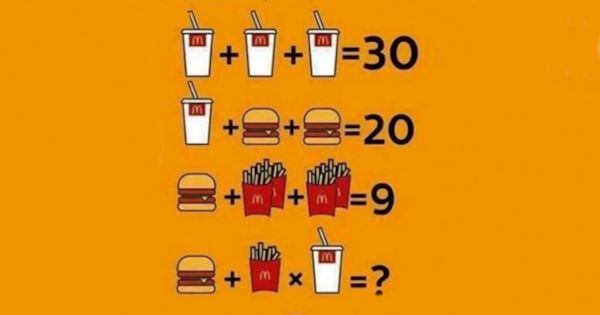

Cos'è la logica
Un gioco di logica è un rompicapo, ovvero un problema o un
enigma
Formulazione di un concetto o un numero da indovinare

a scopo di intrattenimento, con un fondamento matematico o logico.
In molti casi, e soprattutto per quei giochi che vengono diffusi per passaparola,
un gioco di logica ha la forma di un indovinello;
Un caso particolare sono quei giochi in cui la necessità di ragionamento logico è solo apparente
e serve a distrarre chi deve risolvere il gioco, che in realtà richiede un tipo di intuizione completamente diverso
(per esempio, la soluzione potrebbe essere in realtà basata su un gioco di parole).